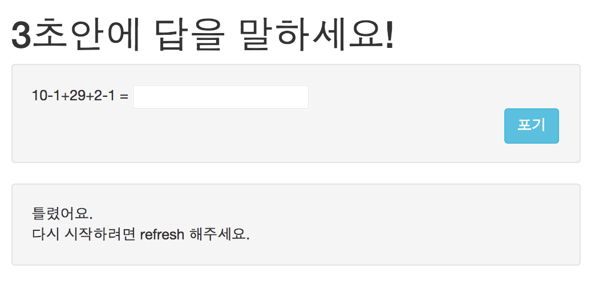

비동기 프로그래밍을 위한 Promise와 Deferred 알아보기
자바스크립트로 어플리케이션을 개발하다 보면 비동기 프로그래밍을 하지 않을 수 없다. 가령 다음과 같은 코드가 있다고 하자.
console.log("1");
$('.button').click(function(){
console.log("2");
});
console.log("3");
setTimeout(function(){ console.log("4"); }, 1000);
console.log("5");
$.get('getUserList.do',function(result){
console.log("6");
});위 코드를 실행하면 콘솔화면에 1 2 3 4 5 6이 나타날까? 그건 시어머니도 모른다. 버튼을 클릭해야 2가 찍히고 1초가 지나야 4가 찍히고 getUserList.do로의 요청이 성공적으로 완료해야 6이 찍히기 때문이다. 아마 1 3 5의 순서만은 보장될 것이다. 이렇게 우리는 콜백 함수를 등록하고 이벤트가 완료되면 해당 콜백 함수를 실행하는 방식의 비동기 프로그래밍을 해왔다.
하지만 비동기 프로그래밍를 하다 보면 여러 이벤트를 순서대로 제어하고자 할 때가 있다. 예를 들어, 클릭하고 1초가 지난 뒤 getUserList.do로 요청을 보내려면 다음과 같은 코드를 작성할 것이다.
$('.button').click(function(){
setTimeout(function(){
$.get('getUserList.do',function(result){
//..... });
}, 1000);
});
});위와 같은 코드를 콜백 피라미드 악몽callback pyramid of doom이라고 하는데 이렇게 작성하면 에러에 대한 처리와 개발 코드에 대한 관리가 매우 어려워진다. 하지만 이러한 비동기 프로그래밍에 대하여 Common JS Promises/A 스펙이 제안됐고 제이쿼리 또한 1.5 이후 버전부터 채택해 왔다. 그래서 다음과 같이 코드를 작성할 수 있다.
var pormise = $.ajax();
pomise.done(function(){ ... });
pomise.fail(function(){ ... });
pomise.always(function(){ ... });위 코드를 보면 AJAX 요청을 하게 되면 promise라는 객체가 반환된다. 그리고 해당 객체의 done 메서드를 이용해 성공 처리를 한다. 이 promise 객체는 Common JS Promises/A에서 비동기 프로그래밍에 대한 처리를 위해 표준 스펙으로 정의된 내용이다.
$q 서비스
AngularJS는 앞에서 본 Common JS Promises/A 스펙에 대한 구현 API를 $q 서비스를 이용해 제공한다. $q 서비스는 Kris Kowal의 Q.js에 영감을 받아 구현되어 이름이 $q 이다. $q 서비스는 Q.js에 비해 제공하는 기능은 적지만 AngularJS의 scope 모델의 데이터 바인딩에 대한 처리가 최적화돼 있다.
Promise 객체
Promise는 문자 그대로 약속을 표현하는 자바스크립트 객체다. 약속은 지켜질 수 있고 물론 지켜지지 않을 수도 있다. 간단한 예를 들면, 선생님이 학생에게 숙제를 주었고 학생은 선생님께 숙제를 해오겠다고(미래의 언젠가) 약속(promise)했다. 이때 선생님은 다음과 같은 경우수를 생각할 수 있다.
- 학생이 약속을 지키고 숙제를 해오는데 100점이다. 그러면 사탕을 10개 준다.
- 학생이 약속을 지키고 숙제를 해오는데 점수가 100점이 아니다. 그러면 사탕을 5개 준다.
- 학생이 약속을 지키지 않고 숙제를 해오지 않았다. 그러면 엉덩이 100만 대를 때린다.
위와 같은 경우를 코드로 나타내면 다음과 같을 것이다.
var promiseWithStudent = Student.doHomework(homework);
promiseWithStudent.then(
//then 메소드의 첫번째 인자로 전달되는 콜백함수는 약속이 지켜지면 실행된다.
function(data) {
if (Teacher.makeScore(data) === 100) {
Teacher.giveCandy(100,Student);
} else {
Teacher.giveCandy(50,Student);
}
},
//then 메소드의 두번째 인자로 전달되는 콜백함수는 약속을 어기면(취소/거절) 실행된다.
function(error) {
Teacher.hitHip(1000000,Student);
}
);학생이 숙제를 해온다고 약속하면 위 코드에서는 promise 객체를 반환한다고 생각하면 된다. 그리고 약속이 지켜질 때와 지켜지지 않을 때를 then 메서드를 이용해 정의하는데 지켜지면 첫 번째 콜백 함수가 호출되고 지켜지지 않으면 두 번째 콜백 함수가 호출된다. 이 처럼 promise 객체는 미래에 지켜지거나 지켜지지 않을 일을 객체로 표현했고 이 일들에 대한 처리를 then 메서드를 이용해 처리하는 것이다.
실제 AngularJS에서는 $http, $timeoute, $resource, $route 등 여러 서비스에서 promise 객체를 반환한다. 그럼 AngularJS의 promise API를 간단한 예제를 이용해 살펴보자. 전체 소스코드는 GitHub web-angular-sample 프로젝트의 promise-deferred Branch에서 promise-deferred.html 파일로 확인할 수 있다.
<!-- 생략 -->
<body ng-controller="mainCtrl">
<div class="container">
<h1>3초안에 답을 말하세요!</h1>
<div class="well clearfix">
<div>
10-1+29+2-1 = <input ng-model="answer" ng-disabled="result">
</div>
<div class="pull-right">
<button class="btn btn-info" ng-click="giveUp()">포기</button>
</div>
</div>
<div class="row">
<div class="col-lg-12">
<p class="well"> <br> </p>
</div>
</div>
</div>
</body>위 코드는 간단히 3초안에 문제를 풀고 답을 하는 화면의 템플릿 코드이다. 그럼 자바스크립트 코드를 보자
angular.module('demo-app', [])
.controller('mainCtrl', ['$scope','$timeout', function ($scope, $timeout) {
//$timeout 서비스는 setTimeout을 AngularJS가 추상화한 서비스로 기본적인 사용법은 같다. 그리고 $timeout 서비스는 promise객체를 반환한다.
var threeSecPromise = $timeout(function() {
return $scope.answer;
},3000);
//해당 약속은 3초가 지나면 자동으로 해당 약속은 지켜지고 then 메서드의 성공 콜백 함수가 실행된다.
threeSecPromise.then(function(val) {
if(val == 39){
$scope.result="맞았어요.";
}else{
$scope.result="틀렸어요.";
}
},function () {
$scope.result="너무 어려웠나요?";
});
//약속이 성공하든 취소하든 finally 메소드가 호출한다.
threeSecPromise.finally(function() {
$scope.info = "다시 시작하려면 refresh 해주세요."
});
$scope.giveUp = function() {
//$timeout은 $timeout.cancel(promise 객체)로 해당 약속을 취소할 수도 있다. 그러면 $timeout에 주어진 콜백 함수는 실행되지 않고 promise의 실패 콜백 함수가 실행된다.
$timeout.cancel(threeSecPromise);
};
}]);위 예제를 브라우저에서 열면 다음 그림과 같다.

사용자가 포기 버튼을 클릭하면 해당 3초 안에 답을 주는 약속을 취소하게 되고 약속을 포기했을 때 “너무 어려웠나요?”라는 결과가 화면에 표시된다. 그리고 약속이 지켜지든 취소되든 “다시 시작하려면 refresh 해주세요.”라는 메시지가 화면에 표시된다.
Deferred 객체
약속이 지켜지거나 거절될 때의 일을 정의하였으면 누군가는 약속을 지키거나 거절해야 한다. 이러한 일을 하는 것이 바로 deferred 객체다. 약속을 만든 사람이 약속을 거절하고 취소하듯이 deferred는 약속을 만들고 이 약속의 상태를 변경한다.
AnguarJS에서는 $q.defer()를 이용해 deferred 객체를 생성할 수 있다(deferred 객체의 생성은 곧 promise의 생성이기도 하다). 이렇게 생성한 deferred 객체는 resolve, reject, notify를 통하여 약속을 지키거나 거절/취소하거나 진행 상태를 알려주게 된다. deferred객체는 주로 별도의 서비스를 만들고 해당 서비스에서 생성하여 해당 객체의 약속을 반환하는 식으로 많이 사용한다. 다음 코드를 보자.
angular.module('demo-app', [])
.factory('userService', function($http, $log, $q) {
return {
getUser: function(userId) {
//deferred 객체를 생성한다.
var deferred = $q.defer();
$http.get('/api/users/' + userID)
.success(function(data) {
//요청이 성공하면 약속을 지키고 별도 데이터를 전달한다.
deferred.resolve({
name: data.name,
address: data.address});
}).error(function(msg, code) {
//요청이 실패하면 약속을 취소하고 메시지를 전달한다.
deferred.reject(msg);
$log.error(msg, code);
});
//해당 deferred 객체의 약속을 반환한다.
return deferred.promise;
}
}
});여러 Promise 묶어주기 ($q.all)
$q 서비스는 앞에서 본 Promise/defer API 뿐만 아니라 미래에 지켜지거나 지켜지지 않을 여러 약속을 하나의 약속으로 처리할 수 있는 API도 제공한다. 그럼 앞의 예제에서 처럼 별도의 서비스를 만들고 이 서비스에서 두 Ajax 서비스가 반환하는 약속을 묶어서 처리하고 그에 대한 약속을 반한해보자.
factory('asyncService', function($http, $q) {
return {
loadDataFromTwoReq: function() {
var deferred = $q.defer(),
httpPromise1 = $http.get('/api/req1'),
httpPromise2 = $http.get('/api/req2');
//두 약속을 $q.all 메서드를 이용해 새로운 약속을 만든다.
$q.all(httpPromise1, httpPromise2)
.then(
function(results) {
//두 약속이 모두 지켜지면 asyncService서비스가 반한하는 약속을 지키고 두 약속이 전달하는 결과를 묶은 배열로 전달한다.
deferred.resolve(results)
},
function(errors) {
deferred.reject(errors);
},
function(updates) {
deferred.update(updates);
});
return deferred.promise;
}
};
});위 코드를 일반적인 콜백 방식으로 작성하게 되면 첫 번째 요청의 성공 콜백에서 다른 요청을 하 고 그 요청의 성공 콜백에서 두 요청에 대한 성공 처리를 하는 코드를 작성하게 된다. 이는 순차 적인 방법이고 첫 번째 요청이 완료돼야만 두 번째 요청을 할 수밖에 없다.(피라미드의 악몽이다.) 하지만 $q 서비스는 $q.all(약속들) 메서드를 이용해 약속을 반환하는 여러 비동기적인 일이 병렬적으로 행해지고 그 약속을 하나로 묶어 성공/실패 처리할 수 있게 해준다.